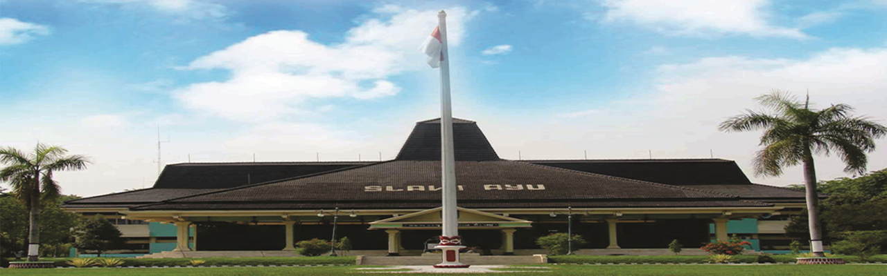
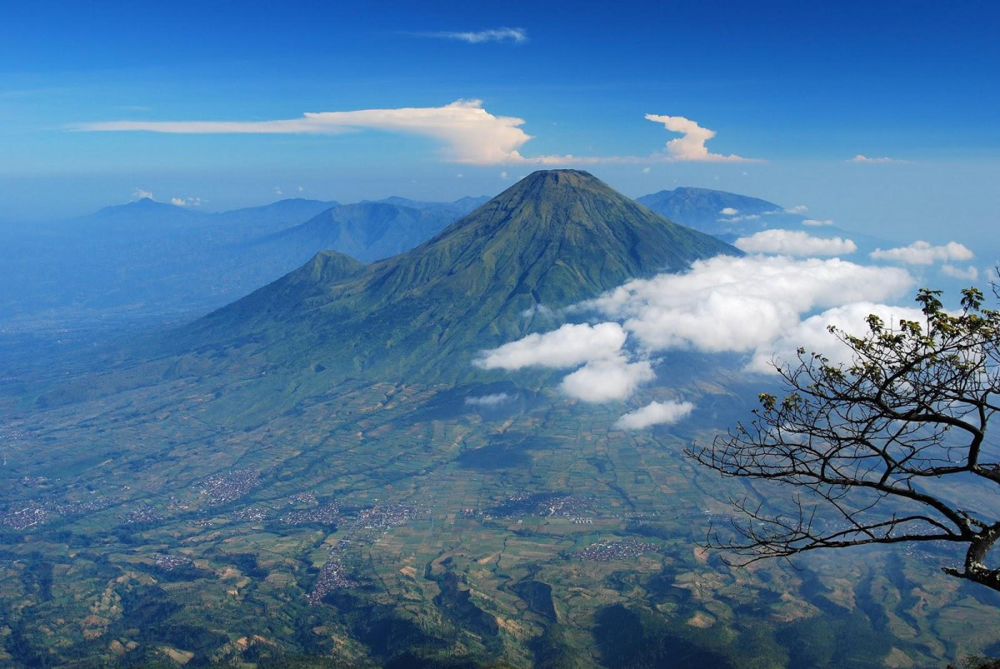
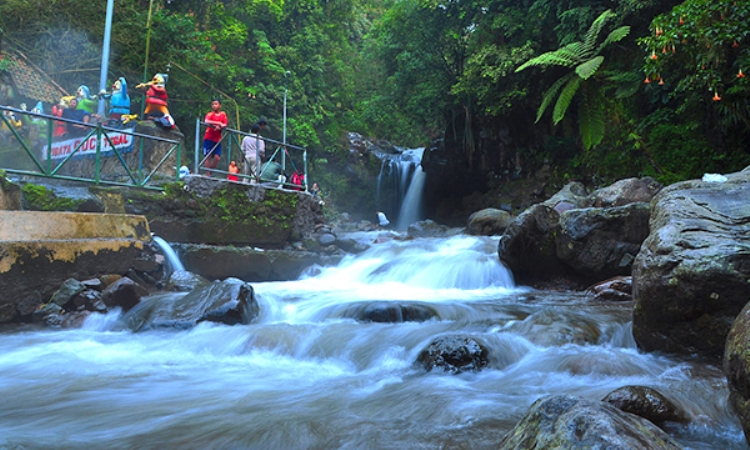
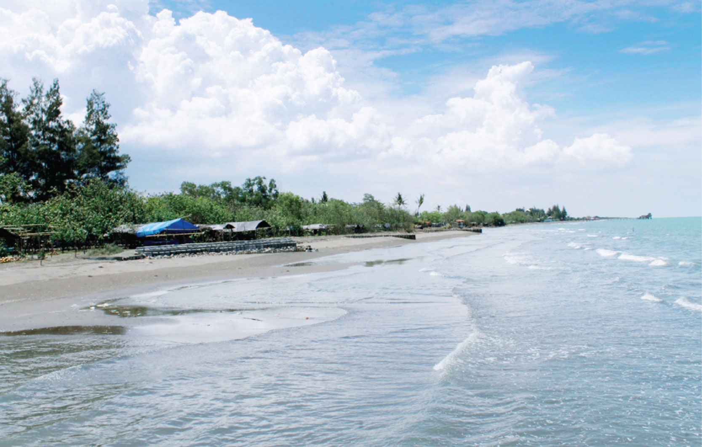

Sejarah Kabupaten Tegal

Kekayaan sejarah sebuah kota atau kawasan terlihat dari jejak peninggalan apa yang disebut cultural
heritage dan living cultural yang tersisa dan hidup di kawasan tersebut. Keduanya merupakan warisan
peradaban umat manusia.
Demikian halnya dengan Kabupaten Tegal, Wilayah yang kaya akan jejak peninggalan kesejarahan sebagai
penanda bahwa Kabupaten Tegal sebagai tlatah kawasan tak dapat dilepaskan dari keterkaitan garis
sejarah hingga membentuk kawasan sekarang ini.
Penekanan pada bidang pertanian misalnya, tak dapat dilepaskan dari kondisi wilayah dan akar
kesejarahan tlatah Kabupaten Tegal yang mengembangkan kapasitasnya selaku wilayah agraris. Tradisi
keagrarisan dimulai dari ketokoan Ki Gede Sebayu juru demung trah Pajang. Bahkan kalau dirunut
keagrarisan itu dimulai semenjak Mataram Kuno.
Kesaksian ini diperkuat denga ditemukannya artefak kuno dan candi di Pedagangan. Ditambah tlatah
Tegal kerapkali dikaitkan dengan kerajaan Pajang dan Mataram Islam yang cenderung kekuasaan dengan
basis pada agraris ( De Graaf, 1986).
Juru Demung Ki Gede Sebayu
Tegal berasal dari nama Tetegal, tanah subur yang mampu menghasilkan tanaman pertanian (Depdikbud
Kabupaten Tegal, 1984). Sumber lain menyatakan, nama Tegal dipercaya berasal dari kata Teteguall.
Sebutan yang diberikan seorang pedagang asal Portugis yaitu Tome Pires yang singgah di Pelabuhan
Tegal pada tahun 1500 –an (Suputro, 1955).
Namun sejarah tlatah Kabupaten Tegal tak dapat diepaskan dari ketokohan Ki Gede Sebayu. Namanya
dikaitkan dengan trah Majapahit, karena sang ayah Ki Gede Tepus Rumput ( kelak bernama Pangeran
Onje) ialah keturunan Batara Katong Adipati Ponorogo yang masih punya kaitan dengan keturunan
dinasti Majapahit (Sugeng Priyadi, 2002).
Geografis

Bagian utara Kabupaten Tegal merupakan dataran rendah. Sedangkan di bagian selatan merupakan
pegunungan, dengan puncaknya Gunung Slamet (3.428 meter). Di perbatasan Kabupaten Pemalang, terdapat
rangkaian perbukitan terjal dan sungai besar yang mengalir, yaitu Kali Gung dan Kali Erang, keduanya
bermata air di hulu Gunung Slamet.
Posisi Geografis
Kabupaten Tegal terletak di bagian barat laut Provinsi Jawa Tengah, dengan letak geografis
108°57'6"–109°21'30" BT dan 6°02'41"–7°15'30" LS. Dan mempunyai letak yang strategis pada jalan
Semarang - Tegal - Cirebon serta Semarang - Tegal - Purwokerto dan Cilacap, dengan fasilitas
pelabuhan di Kota Tegal.
Batas Wilayah
| Utara |
Laut Jawa, dan Kota Tegal |
| Timur |
Kabupaten Pemalang, dan Kabupaten Purbalingga |
| Selatan |
Kabupaten Brebes dan, Kabupaten Banyumas |
| Barat |
Kabupaten Brebes, dan Kota Tegal |
Wisata
Ngomongin soal Tegal, tentu ingatan Anda Mungkin akan langsung tertuju pada Warteg "Warung Tegal"
dan bahasa dialek "Ngapak"-nya yang unik. Namun, jika Anda menelusuri lebih jauh lagi, Anda akan
terkagum-kagum melihat keindahan objek wisatanya yang eksotis dan menarik.
Pemandian Air Panas Guci

Taman Wisata Air Panas Guci Tegal ini memiliki beberapa tempat pemandian umum yang terbuka dan
tertutup. Pemandian air panas tertutup ini terdiri dari 20 kamar pemandian air panas sekaligus
fasilitas kamar mandi umum.
Sedangkan untuk pemandian air panas yang terbuka, Anda tidak perlu repot repot menyiapkan biaya
retribusi karena spot ini dibuka untuk umum secara gratis. Maka dari itu, tidak heran jika
Pemandian Air Panas Guci Tegal yang terbuka selalu ramai dikunjungi warga lokal dan wisatawan.
Pantai Purwahamba Indah

Pantai Purwahamba Indah ini terkenal dengan sebutan Purin. Selain Purin ada juga beberapa orang
yang masih menyebutnya dengan pantai Sosro. Meskipun pasir pantainya tidak begitu putih namun
berada di area pantai ini sangat menyenangkan untuk dinikmati.
Wisatawan dapat merasakan indahnya laut Indonesia bagian utara pulau Jawa dengan ditemani angin
pantai yang sepoi-sepoi. Wisatawan juga dapat menikmati jajanan di sekitar pantai sambil
berfoto-foto sebagai kenangan masa liburan.